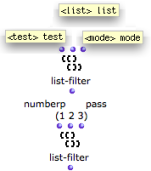
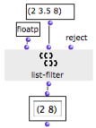
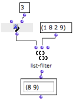

OpenMusic DocumentationHiérarchie de section : OM 6.6 User Manual > Visual Programming II > Control Structures > Predicates > In Practice
OpenMusic DocumentationHiérarchie de section : OM 6.6 User Manual > Visual Programming II > Control Structures > Predicates > In Practice
Navigation : page précédente | page suivante
Attention, votre navigateur ne supporte pas le javascript ou celui-ci à été désactivé. Certaines fonctionnalités de ce guide sont restreintes.
Predicates: In Practice
Predicates can be used as conditions defining the execution of an operation. Hence, predicates must be connected to
the "test" input of an OMIF box,
to a function that has a test argument .
If a given property or a relation is verified by a predicate, the operation is performed.
Example : Using a Type Predicate as a Test Argument

|
Here, we want to delete floats from a list with list-filter. List-filter rejects or passes elements from a list, depending on the predicate taken as argument. It has three default inputs :
|
The floatp predicate and the "reject" option have been assigned to list-filter, so that floats are rejected.
|

|
Using a Function on Lambda Mode
A predicate can be a function on "lambda" mode. |

|
Using a Lambda Function as a Predicate
Références :
Plan :
Navigation : page précédente | page suivante
A propos...(c) Ircam - Centre Pompidou